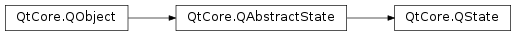

QState¶
Inherited by: QStateMachine
Note
This class was introduced in Qt 4.6.
Synopsis¶
Functions¶
- def
addTransition(arg__1, arg__2) - def
addTransition(sender, signal, target) - def
addTransition(target) - def
addTransition(transition) - def
assignProperty(object, name, value) - def
childMode() - def
errorState() - def
initialState() - def
removeTransition(transition) - def
setChildMode(mode) - def
setErrorState(state) - def
setInitialState(state) - def
transitions()
Detailed Description¶
The
PySide2.QtCore.QStateclass provides a general-purpose state forPySide2.QtCore.QStateMachine.
PySide2.QtCore.QStateobjects can have child states, and can have transitions to other states.PySide2.QtCore.QStateis part of The State Machine Framework .The
PySide2.QtCore.QState.addTransition()function adds a transition. ThePySide2.QtCore.QState.removeTransition()function removes a transition. ThePySide2.QtCore.QState.transitions()function returns the state’s outgoing transitions.The
PySide2.QtCore.QState.assignProperty()function is used for defining property assignments that should be performed when a state is entered.Top-level states must be passed a
PySide2.QtCore.QStateMachineobject as their parent state, or added to a state machine usingQStateMachine.addState().
States with Child States¶
The
PySide2.QtCore.QState.childMode()property determines how child states are treated. For non-parallel state groups, thePySide2.QtCore.QState.setInitialState()function must be called to set the initial state. The child states are mutually exclusive states, and the state machine needs to know which child state to enter when the parent state is the target of a transition.The state emits the
QState.finished()signal when a final child state (PySide2.QtCore.QFinalState) is entered.The
PySide2.QtCore.QState.setErrorState()sets the state’s error state. The error state is the state that the state machine will transition to if an error is detected when attempting to enter the state (e.g. because no initial state has been set).
-
class
PySide2.QtCore.QState([parent=nullptr])¶ -
class
PySide2.QtCore.QState(childMode[, parent=nullptr]) Parameters: - childMode –
PySide2.QtCore.QState.ChildMode - parent –
PySide2.QtCore.QState
Constructs a new state with the given
parentstate.Constructs a new state with the given
childModeand the givenparentstate.- childMode –
-
PySide2.QtCore.QState.ChildMode¶ This enum specifies how a state’s child states are treated.
Constant Description QState.ExclusiveStates The child states are mutually exclusive and an initial state must be set by calling QState.setInitialState().QState.ParallelStates The child states are parallel. When the parent state is entered, all its child states are entered in parallel.
-
PySide2.QtCore.QState.RestorePolicy¶ This enum specifies the restore policy type. The restore policy takes effect when the machine enters a state which sets one or more properties. If the restore policy is set to , the state machine will save the original value of the property before the new value is set.
Later, when the machine either enters a state which does not set a value for the given property, the property will automatically be restored to its initial value.
Only one initial value will be saved for any given property. If a value for a property has already been saved by the state machine, it will not be overwritten until the property has been successfully restored.
Constant Description QState.DontRestoreProperties The state machine should not save the initial values of properties and restore them later. QState.RestoreProperties The state machine should save the initial values of properties and restore them later.
-
PySide2.QtCore.QState.addTransition(transition)¶ Parameters: transition – PySide2.QtCore.QAbstractTransitionAdds the given
transition. The transition has this state as the source. This state takes ownership of the transition.
-
PySide2.QtCore.QState.addTransition(sender, signal, target) Parameters: - sender –
PySide2.QtCore.QObject - signal – str
- target –
PySide2.QtCore.QAbstractState
Return type: Adds a transition associated with the given
signalof the givensenderobject, and returns the newPySide2.QtCore.QSignalTransitionobject. The transition has this state as the source, and the giventargetas the target state.- sender –
-
PySide2.QtCore.QState.addTransition(target) Parameters: target – PySide2.QtCore.QAbstractStateReturn type: PySide2.QtCore.QAbstractTransitionAdds an unconditional transition from this state to the given
targetstate, and returns then new transition object.
-
PySide2.QtCore.QState.addTransition(arg__1, arg__2) Parameters: - arg__1 –
PyObject - arg__2 –
PySide2.QtCore.QAbstractState
Return type: - arg__1 –
-
PySide2.QtCore.QState.assignProperty(object, name, value)¶ Parameters: - object –
PySide2.QtCore.QObject - name – str
- value – object
Instructs this state to set the property with the given
nameof the givenobjectto the givenvaluewhen the state is entered.See also
propertiesAssigned()- object –
-
PySide2.QtCore.QState.childMode()¶ Return type: PySide2.QtCore.QState.ChildModeReturns the child mode of this state.
See also
-
PySide2.QtCore.QState.errorState()¶ Return type: PySide2.QtCore.QAbstractStateReturns this state’s error state.
-
PySide2.QtCore.QState.initialState()¶ Return type: PySide2.QtCore.QAbstractStateReturns this state’s initial state, or 0 if the state has no initial state.
-
PySide2.QtCore.QState.removeTransition(transition)¶ Parameters: transition – PySide2.QtCore.QAbstractTransitionRemoves the given
transitionfrom this state. The state releases ownership of the transition.
-
PySide2.QtCore.QState.setChildMode(mode)¶ Parameters: mode – PySide2.QtCore.QState.ChildModeSets the child
modeof this state.See also
-
PySide2.QtCore.QState.setErrorState(state)¶ Parameters: state – PySide2.QtCore.QAbstractStateSets this state’s error state to be the given
state. If the error state is not set, or if it is set to 0, the state will inherit its parent’s error state recursively. If no error state is set for the state itself or any of its ancestors, an error will cause the machine to stop executing and an error will be printed to the console.See also
-
PySide2.QtCore.QState.setInitialState(state)¶ Parameters: state – PySide2.QtCore.QAbstractStateSets this state’s initial state to be the given
state.statehas to be a child of this state.See also
-
PySide2.QtCore.QState.transitions()¶ Return type: Returns this state’s outgoing transitions (i.e. transitions where this state is the
source state), or an empty list if this state has no outgoing transitions.
© 2018 The Qt Company Ltd. Documentation contributions included herein are the copyrights of their respective owners. The documentation provided herein is licensed under the terms of the GNU Free Documentation License version 1.3 as published by the Free Software Foundation. Qt and respective logos are trademarks of The Qt Company Ltd. in Finland and/or other countries worldwide. All other trademarks are property of their respective owners.